Strona poświęcona tłumaczeniom kart taro.
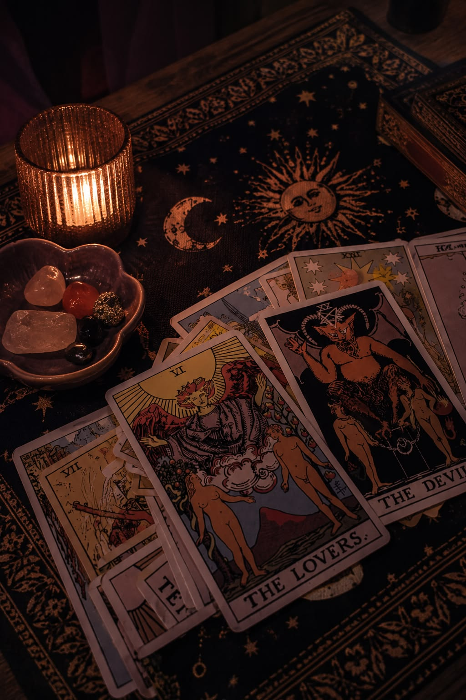
| Nr. | Nazwa karty | Znaczenie karty | Widok |
|---|---|---|---|
| 1 | Głupiec | Nowy początek, spontaniczność, ufność i skok w nieznane. | 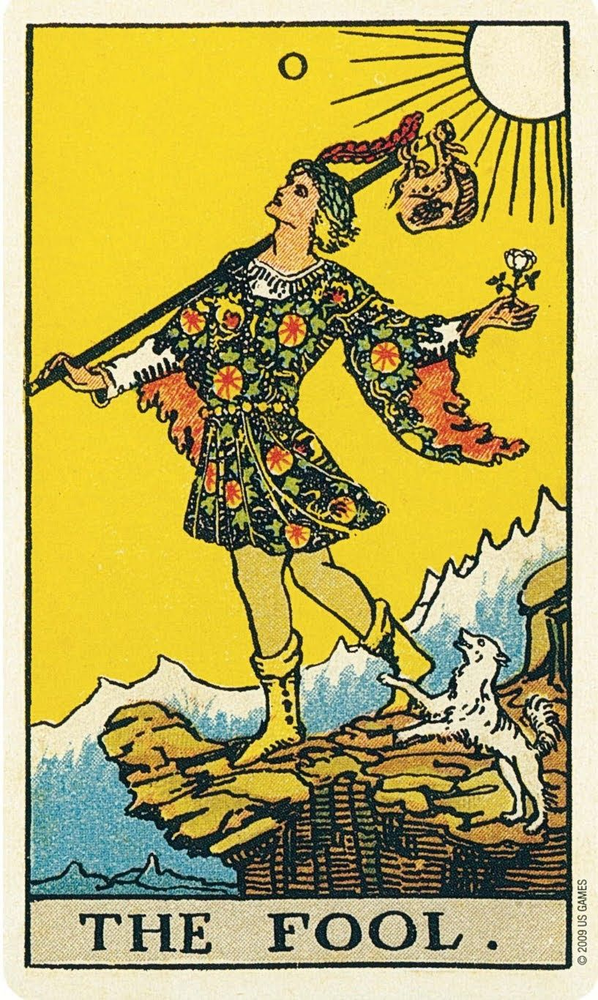 |
| 2 | Mag | Siła woli, umiejętności i wykorzystanie zasobów do osiągnięcia celu. | 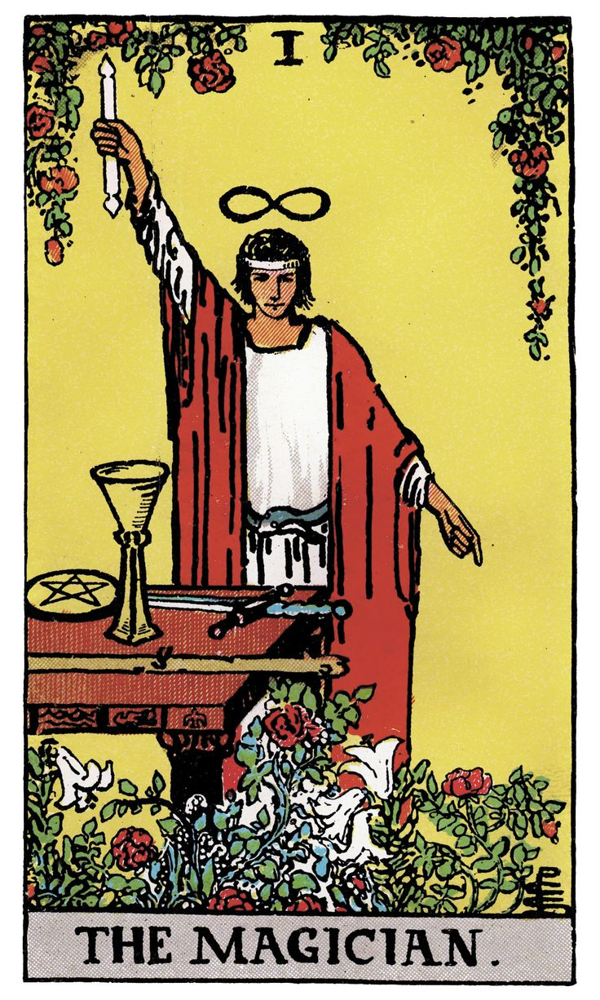 |
| 3 | Najwyższa Kapłanka | Intuicja, tajemnica i wiedza ukryta pod powierzchnią. | 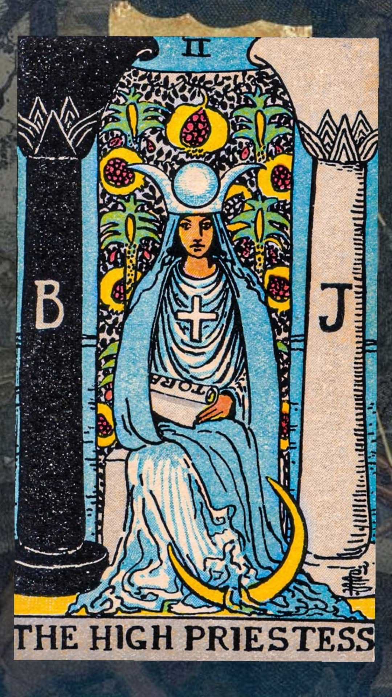 |
| 4 | Cesarzowa | Płodność, obfitość, troska i twórcza energia. |  |
| 5 | Cesarz | Władza, struktura, stabilność i autorytet. |  |
| 6 | Najwyższy Kapłan | Tradycja, nauka, wartości i duchowe przewodnictwo. | 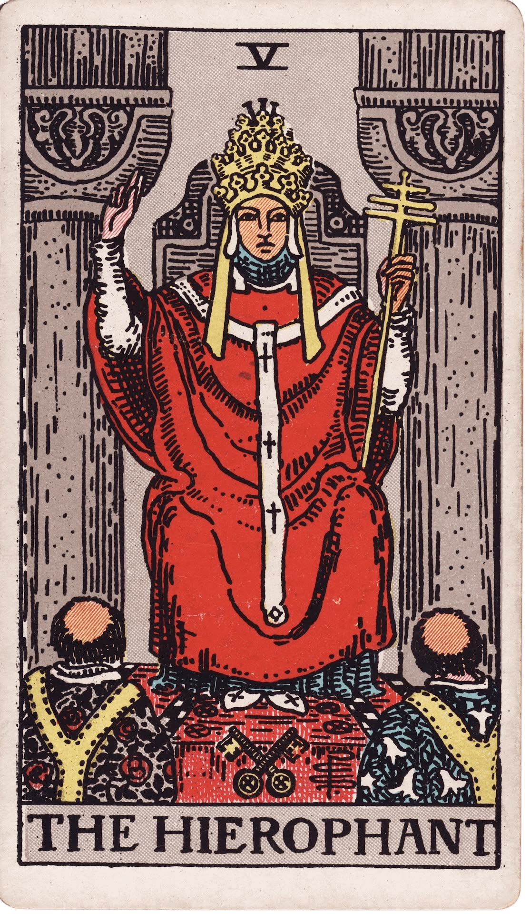 |
| 7 | Zakochani | Reprezentuje miłość, harmonię i wybory w relacjach. Może wskazywać na ważne decyzje dotyczące związków lub partnerstwa. | 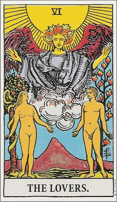 |
| 8 | Rydwan | Determinacja, kontrola i zwycięstwo dzięki zdyscyplinowanej woli. |  |
| 9 | Siła | Odwaga, cierpliwość i łagodna siła wewnętrzna. | 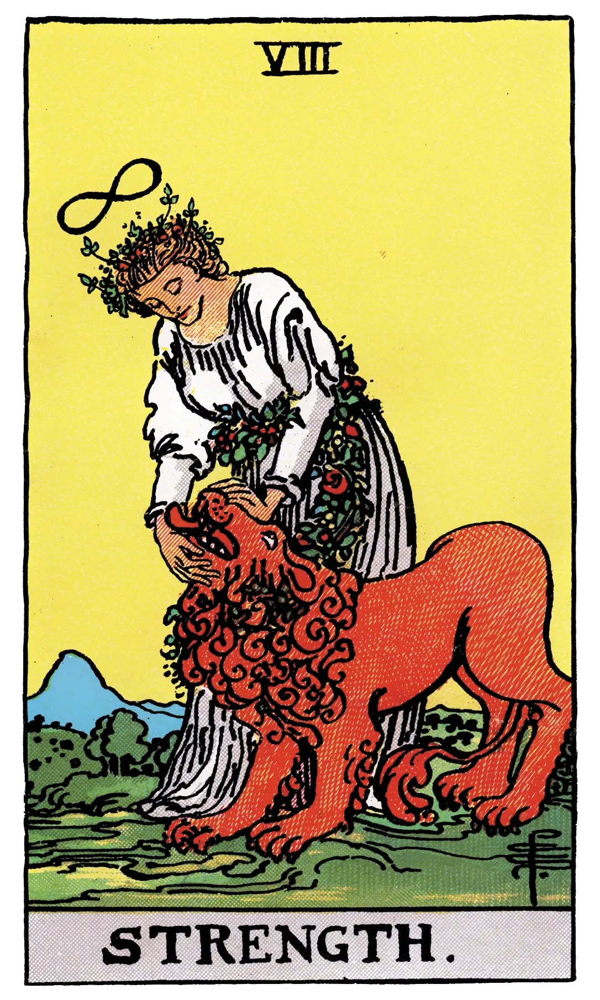 |
| 10 | Pustelnik | Samotność, introspekcja i szukanie własnej prawdy. |  |
| 11 | Koło Fortuny | Cykle, zmiana losu i zbieg okoliczności. |  |
| 12 | Sprawiedliwość | Symbolizuje równowagę, uczciwość i konsekwencje działań. Wskazuje na potrzebę podejmowania odpowiedzialnych decyzji i dążenia do sprawiedliwości. | 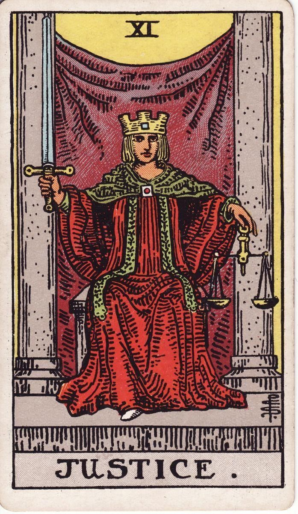 |
| 13 | Wisielec | Zawieszenie, poświęcenie i spojrzenie z innej perspektywy. |  |
| 14 | Śmierć | Koniec etapu, transformacja i nieunikniona zmiana. |  |
| 15 | Umiarkowanie | Równowaga, umiar i harmonijne łączenie przeciwieństw. |  |
| 16 | Diabeł | Uzależnienia, pokusy i uwikłanie w ograniczające schematy. |  |
| 17 | Wieża | Nagły wstrząs, runięcie złudzeń i oczyszczenie. |  |
| 18 | Gwiazda | Symbolizuje nadzieję, inspirację i duchowe przewodnictwo. Reprezentuje pozytywne zmiany i nowe możliwości w życiu. | 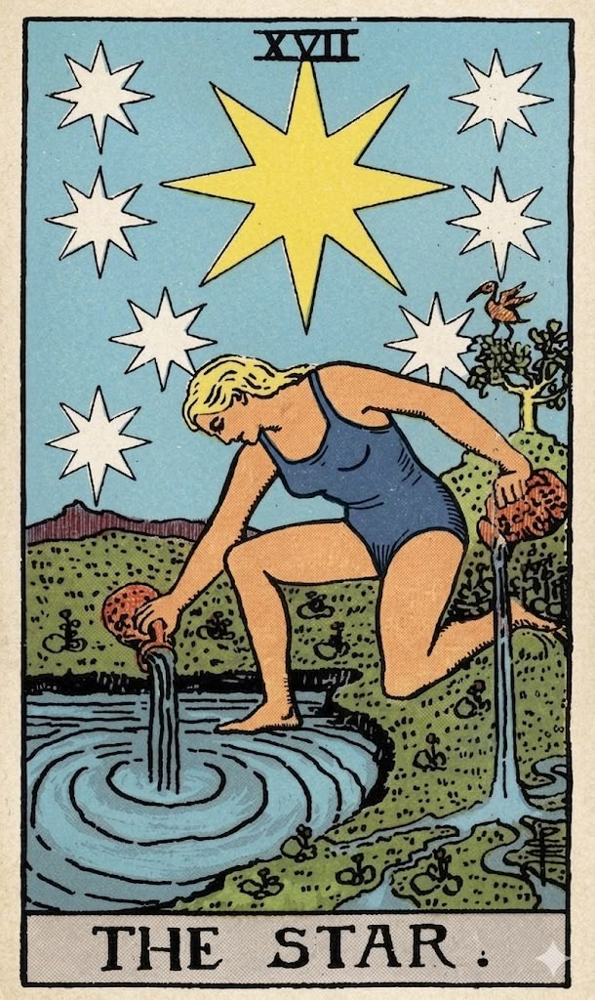 |
| 19 | Księżyc | Iluzje, lęki, sny i podświadomość. | 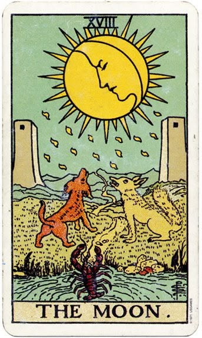 |
| 20 | Słońce | Radość, sukces, witalność i jasność. |  |
| 21 | Sąd Ostateczny | Przebudzenie, rozliczenie i wezwanie do nowego etapu. | 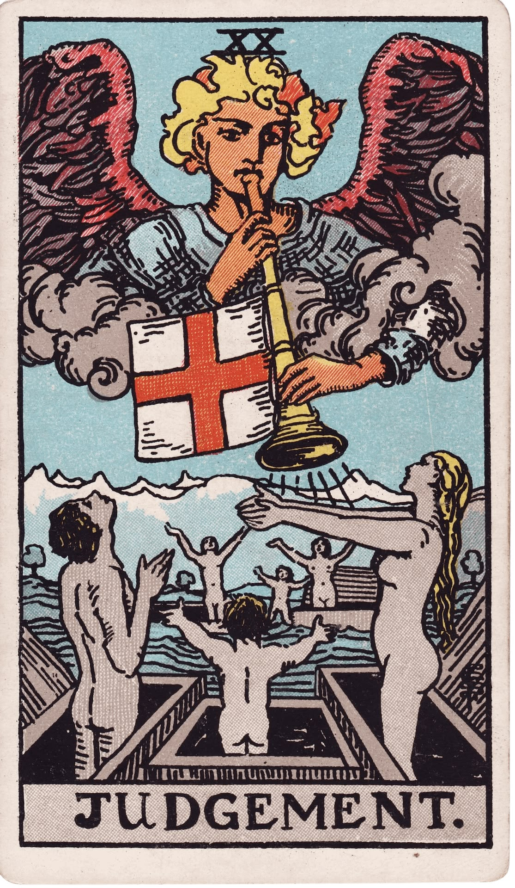 |
| 22 | Świat | Dopełnienie, spełnienie i zakończony cykl. | 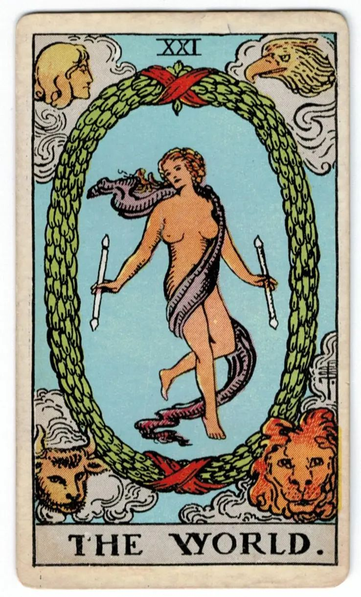 |